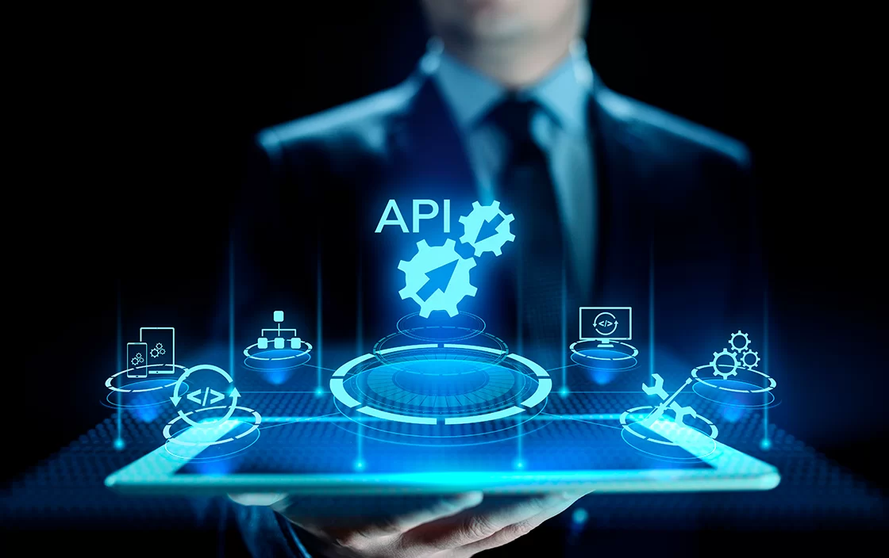

El Futuro es Conectado: ¿Por Qué Son Tan Importantes?
Hemos visto qué son las APIs, cómo funcionan a través de analogías y ejemplos, y para qué sirven. La conclusión es clara: las APIs son mucho más que un simple término técnico; son pilares fundamentales de la tecnología moderna y del futuro.
Permiten a las empresas y desarrolladores:
- Acelerar el desarrollo: Al no tener que construir todo desde cero.
- Mejorar la experiencia del usuario: Integrando servicios útiles y familiares.
- Crear nuevos modelos de negocio: Basados en la "economía de APIs", donde se ofrecen servicios a través de ellas.
- Impulsar la innovación: Facilitando la experimentación y la combinación de tecnologías.
En un mundo donde todo tiende a estar conectado – desde tu móvil y tu reloj hasta tu coche y tu casa – las APIs son las que hacen posible esa interconexión. Entenderlas no es solo para programadores, sino para cualquiera que quiera comprender cómo se construye y funciona el mundo digital que nos rodea. ¡Son el lenguaje universal de las aplicaciones!